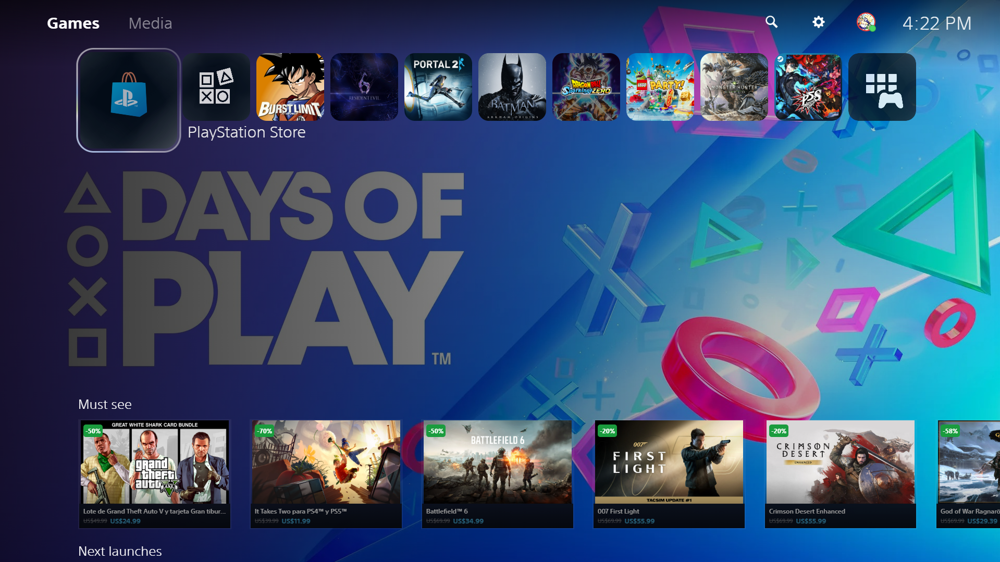
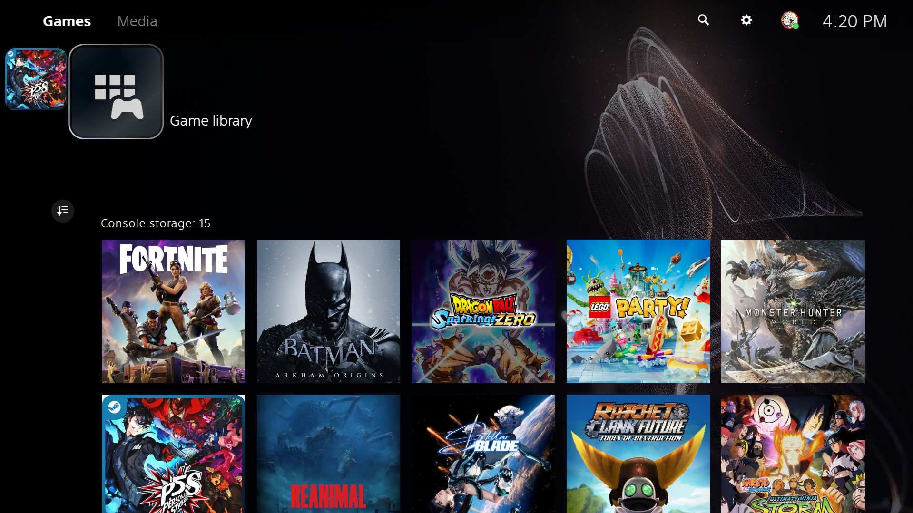
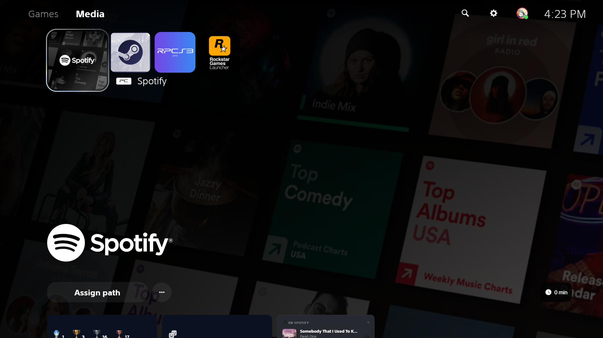
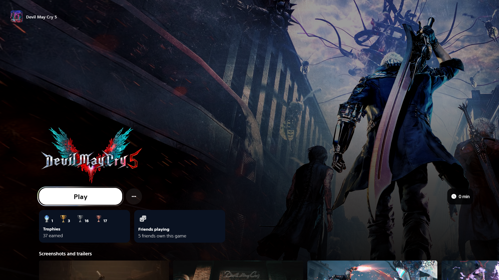
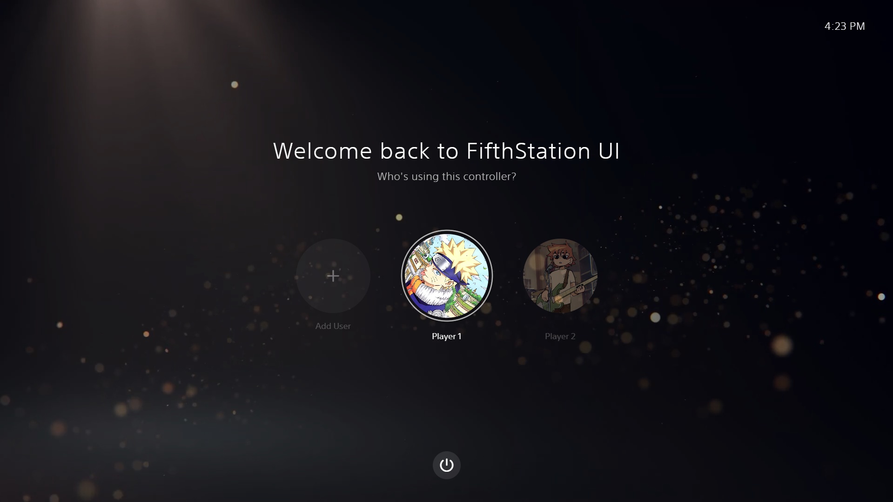
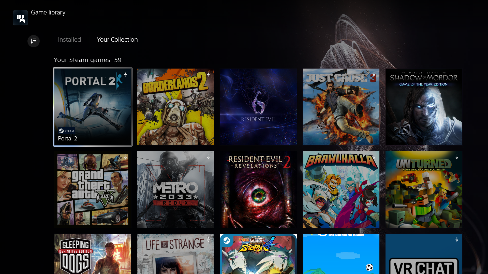

GALERÍA
Interfaz Premium







WPS5 unifica tu biblioteca de Steam, Epic Games y PC en una interfaz premium de última generación. Gestión de perfiles, multimedia integrado, noticias gaming y mucho más.
Detecta automáticamente tus juegos instalados de Steam, Epic Games y ejecutables locales. Todo en un solo carrusel.
Inicia sesión con tu cuenta Steam via OpenID. Accede a tu lista de deseos, ofertas activas, logros y tiempo de juego.
Integración con IGDB y SteamGridDB para portadas HD, heroes, logos, descripciones y screenshots en alta calidad.
Reproductor de video fullscreen integrado con control de sesiones de Windows Media. Compatible con YouTube y Spotify.
Selector de perfiles estilo consola para que cada jugador tenga su configuración, favoritos y progreso individual.
Feed de noticias de juegos en tiempo real integrado en el dashboard. Mantente al día sin salir de la app.
Personaliza cada juego con su propio fondo. Efectos de desenfoque cinematográfico y transiciones suaves entre títulos.
Explorar las ofertas destacadas de Steam y el catálogo de juegos populares sin salir de WPS5.






WPS5 nació de la idea de llevar la experiencia de una consola moderna al escritorio de Windows. Una interfaz que respeta tu tiempo, cuida el diseño y centraliza todo lo que necesitas para disfrutar tus juegos.